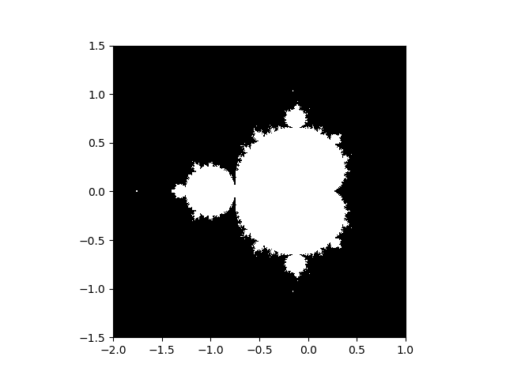

Note
Click here to download the full example code
Mandelbrot set¶
Compute the Mandelbrot fractal and plot it
import numpy as np
import matplotlib.pyplot as plt
from numpy import newaxis
def compute_mandelbrot(N_max, some_threshold, nx, ny):
# A grid of c-values
x = np.linspace(-2, 1, nx)
y = np.linspace(-1.5, 1.5, ny)
c = x[:,newaxis] + 1j*y[newaxis,:]
# Mandelbrot iteration
z = c
# The code below overflows in many regions of the x-y grid, suppress
# warnings temporarily
with np.warnings.catch_warnings():
np.warnings.simplefilter("ignore")
for j in range(N_max):
z = z**2 + c
mandelbrot_set = (abs(z) < some_threshold)
return mandelbrot_set
mandelbrot_set = compute_mandelbrot(50, 50., 601, 401)
plt.imshow(mandelbrot_set.T, extent=[-2, 1, -1.5, 1.5])
plt.gray()
plt.show()
Total running time of the script: ( 0 minutes 0.106 seconds)